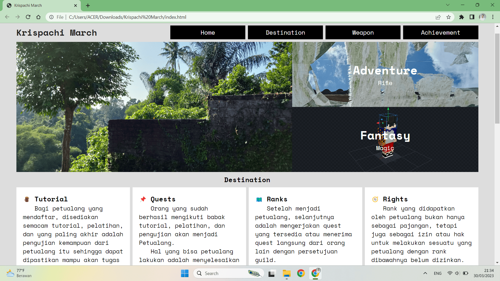
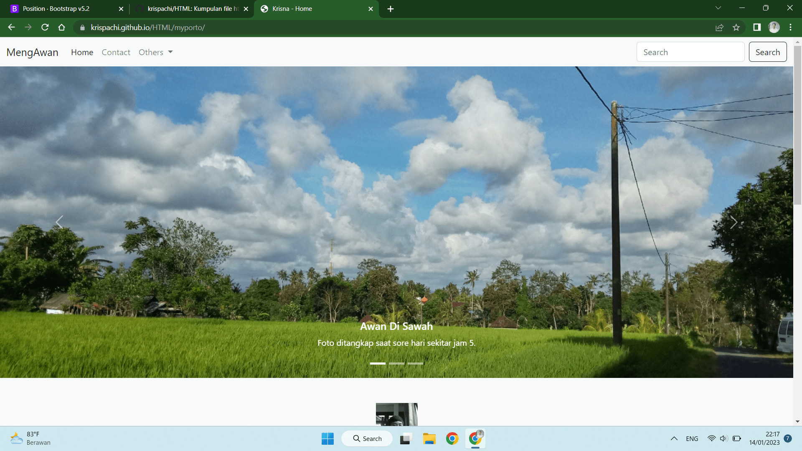
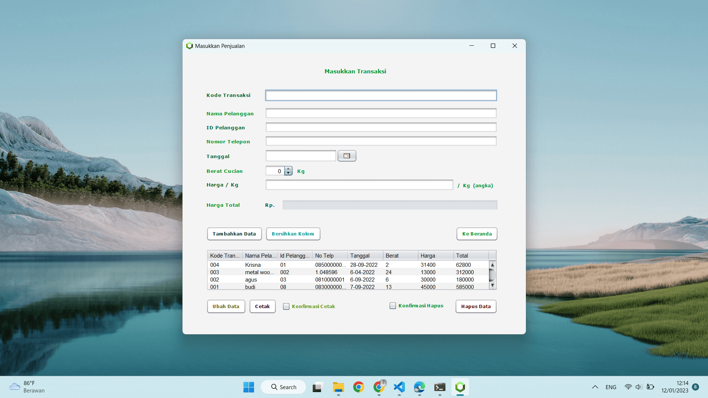

Krispachi March
Krispachi March adalah nama dari website yang saya buat disaat belajar tentang CSS Grid di channel Web Programming UNPAS di YouTube. Saya membuat website ini sambil mengikuti tutorial dan sedikit memodifikasi isi website di tutorial yang pastinya saya sudah pelajari setiap bagian dari kode yang dipakai untuk membuat websitenya.
Kunjungi Websitenya

Portfolio Alpha
Website Portfolio Alpha adalah Website yang saya buat untul latihan belajar menggunakan Bootstrap. Saya menonton tutorial di Channel YouTube Web Programming UNPAS pada video NgoBar #27 sambil mempraktekkan membuat Websitenya dengan memodifikasi beberapa tampilan sesuai keinginan saya.
Kunjungi Websitenya

MengAwan
Website MengAwan adalah website yang aku buat sebagai latihan untuk menggunakan Bootstrap. Aku membuat website ini sambil melihat tutorial di YouTube sekaligus langsung praktek dan aku modifikasi dengan menambahkan ide sendiri dan jadilah website ini hehehe.
Kunjungi Websitenya

Program Kasir Krisna
Program Kasir Krisna adalah program Point Of Sale yang saya buat menggunakan Java GUI serta memakai Embedded Derby Database yaitu data dapat disimpan langsung didalam folder program sehingga tidak memerlukan aplikasi tambahan untuk menggunakan database dan dengan catatan sudah menginstall JDK.
Lihat Programnya